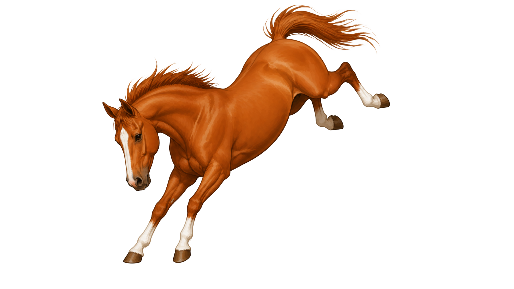
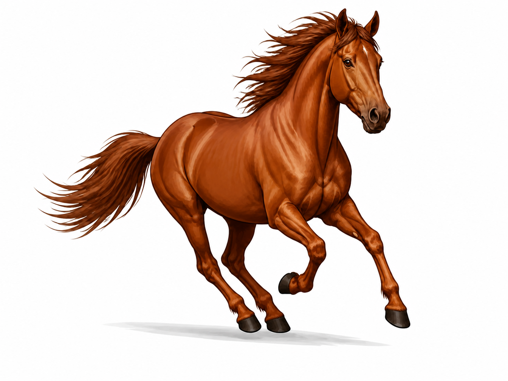
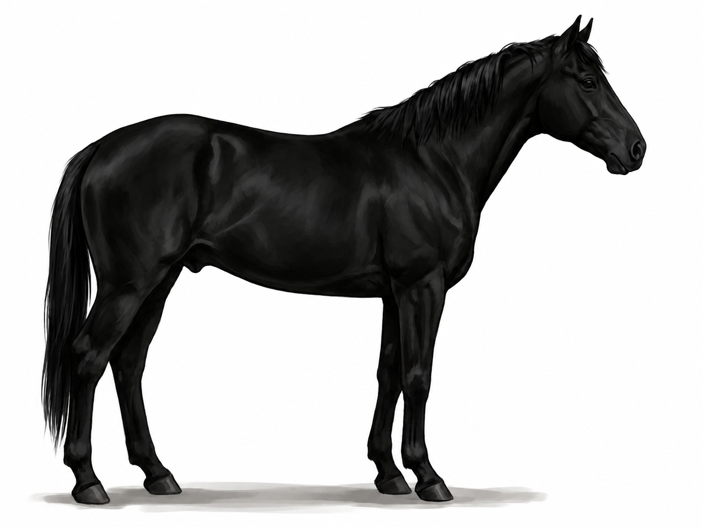
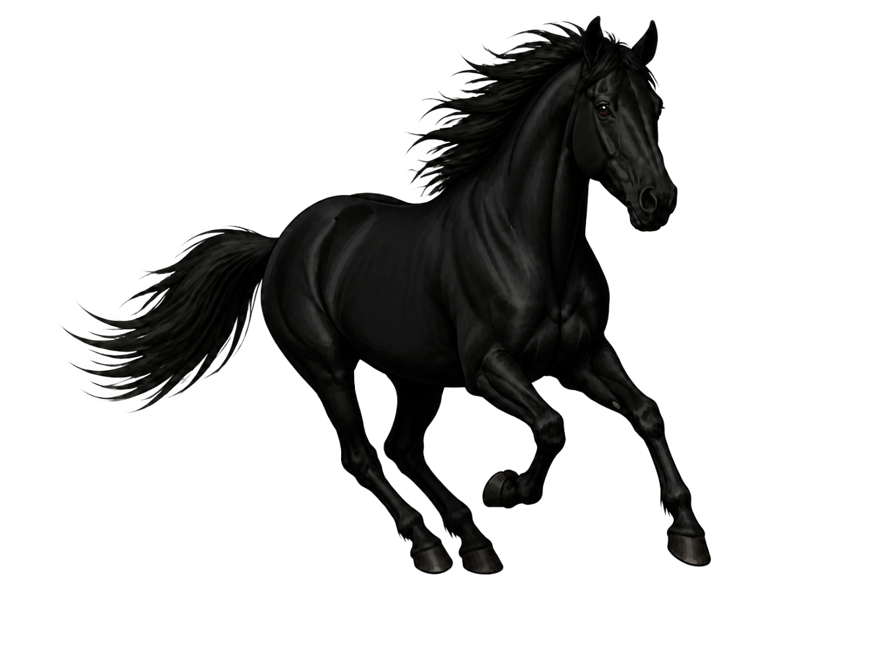
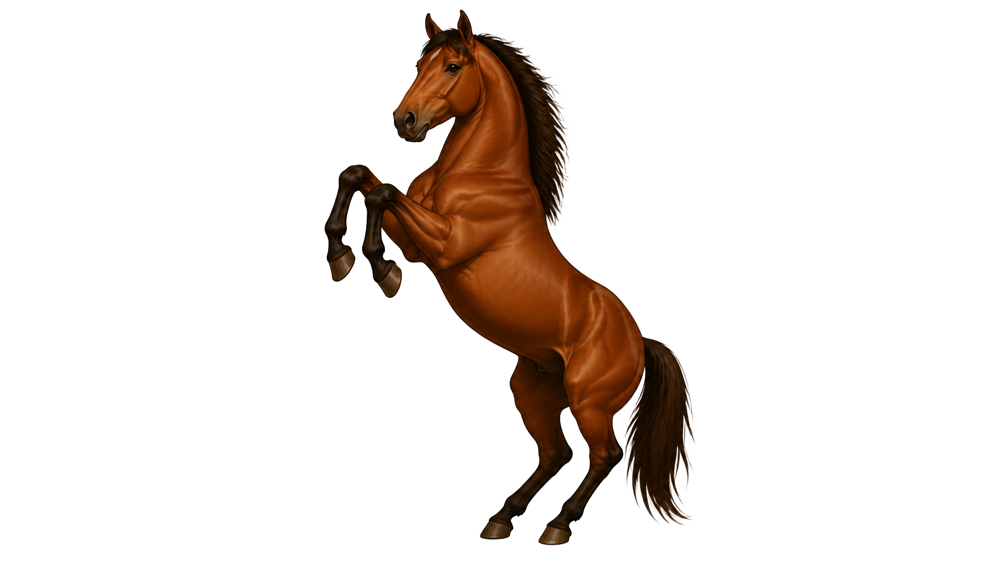
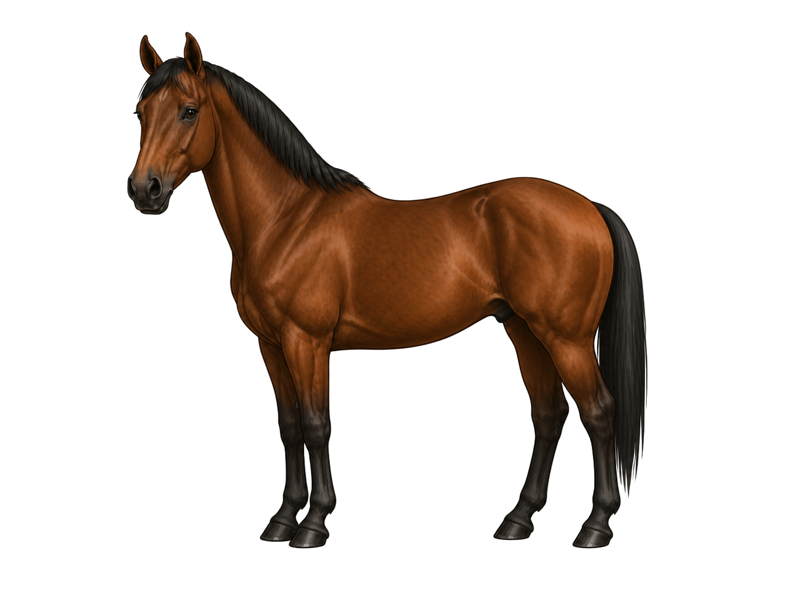

Red, Copper, or Brown-Red
Chestnut body color ranges from pale golden-red to a deep, dark brown-red called liver chestnut. The shade varies between individuals, but the underlying pigment is always phaeomelanin — the red pigment.
Chestnut, black, and bay are the three foundation colors of the horse world. Learn what makes each one unique and how to tell them apart with confidence using clear, reliable visual clues.

Every horse coat color in existence is built on top of one of three base colors: chestnut, black, or bay. Dilutions, patterns, and modifiers can change how they appear, but the base color is always one of these three. Use the tabs below to explore each color in detail.
Chestnut is the most common base coat color. It is produced by phaeomelanin only — no black pigment is present anywhere. Every shade of red, copper, gold, and brown in the chestnut range comes from variations in the same red pigment.
Chestnut body color ranges from pale golden-red to a deep, dark brown-red called liver chestnut. The shade varies between individuals, but the underlying pigment is always phaeomelanin — the red pigment.
The mane and tail of a chestnut are always in the same red-brown family as the body, or lighter. A chestnut may have a flaxen (pale cream or blonde) mane and tail. What a chestnut will never have is a black mane. That one detail separates chestnut from bay.
Chestnut horses have no black on the lower legs. The legs match the body color. Black points — black lower legs — are a bay characteristic. Their absence confirms chestnut.
Chestnut horses produce only red pigment. No eumelanin is expressed anywhere — not in the mane, tail, legs, or body. This is what makes chestnut one of the most straightforward base colors to identify once you know what to look for.


A lighter, more golden-orange shade of chestnut. The term sorrel is often used interchangeably with chestnut, especially in western disciplines. The base color is still the same — phaeomelanin only.
A very dark red-brown shade of chestnut. Liver chestnuts can appear almost black at a distance. The key clue is the mane and tail, which will be the same dark brown-red as the body — not black.
A chestnut with a noticeably lighter, pale cream or blonde mane and tail. The body is red and the mane is significantly lighter — creating an eye-catching contrast. No black points.
True black is produced by eumelanin only — no red pigment is expressed anywhere. The result is a horse that is uniformly black from head to tail with no warm tones visible anywhere on the body, mane, or legs.
A true black horse has a uniformly black body with no areas of red, brown, or rust. The shaded areas — flanks, around the eyes, muzzle — are also black. If any warm tones appear in these areas, the horse is more likely a very dark bay.
The mane and tail of a true black horse are also fully black — no lighter tones, no contrast. The black is uniform from body through mane and tail. This distinguishes black from dark bay, which can have a black mane over a body with warm brown tones.
Unlike bay, where black lower legs contrast with a red-brown body, a black horse has black legs that are the same color as the entire horse. There is no contrast — the black is consistent everywhere.
Black horses express only eumelanin. No phaeomelanin means no red or warm tones anywhere. This full suppression of the red pigment is what creates the clean, uniform black seen on a true black horse.


Many black horses fade to a brownish or rusty tone in summer due to sun exposure. This is called fading black or sun-faded black. The horse is still genetically black — the coat color changes seasonally, not genetically. After shedding in autumn, a fading black will return to true black.
To confirm a fading black, look at protected areas — under the mane or saddle area — where the coat has not been exposed to the sun. Those areas will still show the true black.
Bay is the most visually distinctive base color because it shows both pigments: phaeomelanin on the body and eumelanin on the mane, tail, lower legs, and ear tips. Those dark areas are called black points, and they are the defining feature of every bay horse.
Bay body color ranges from light brown to a rich, deep red-brown called blood bay. The body color comes from phaeomelanin — the same red pigment as chestnut. The difference is what happens on the mane, tail, and legs.
A black mane and tail are required for a horse to be bay. This is the fastest and most reliable single identifier. If the mane is black over a red-brown body, the horse is bay. If the mane matches the body, the horse is chestnut.
Bay horses have black lower legs that contrast clearly with the body color. This black coloring on the lower legs is part of the black points — the cluster of black areas that set bay apart from every other base color.
Bay horses express both pigments — red phaeomelanin on the body and black eumelanin on the points. This is the unique genetic feature of bay: the restriction of eumelanin to specific areas of the body while phaeomelanin dominates the rest.


A rich, deep red bay coat with a vivid color that stands out clearly. The body has a strong red saturation, always paired with black points. One of the most striking bay shades.
A very dark brown body that can appear nearly black. Look for warm brown tones at the flanks, muzzle, and around the eyes — they confirm dark bay rather than true black. Black mane and tail are still present.
A pale or light brown body that may look washed out. Despite the light body, the mane, tail, and lower legs are still clearly black. The black points are the confirmation even on the palest bay.